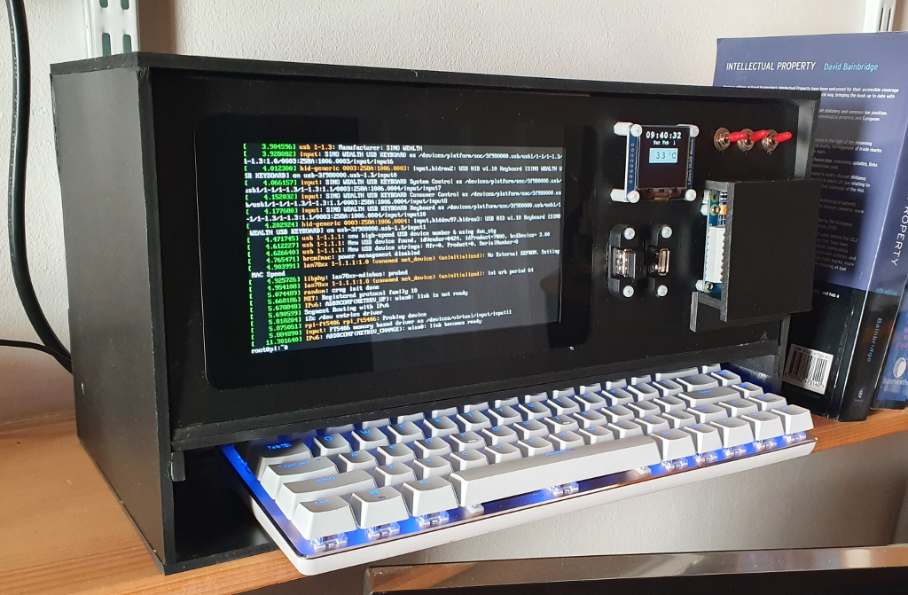
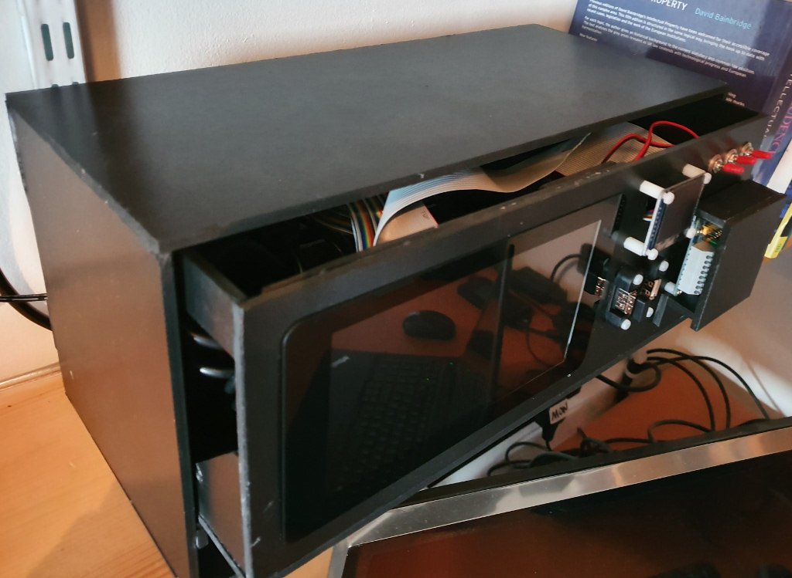

Prototyping a large Raspberry Pi case

Something that continues to surprise me about the Raspberry Pi marketplace is that, despite the Pi being promoted as a device for experimenters, very little is for sale that is genuinely adaptable or customizable. Take cases, for example -- there are hundreds of plastic Pi cases on the market, all tiny and all much the same. These cases are no use at all for designers who need to experiment with larger pieces of equipment that embed a Raspberry Pi, perhaps with a screen and other equipment.
What I've been looking for is a case that is large enough to contain a Raspberry Pi board, a 7" touchscreen, and provide an external patch panel for connecting to the GPIO. The case should be able to accommodate a battery pack and (if necessary) charging circuit. All the Pi's connections (HDMI, audio, USB, SD card, GPIO...) should be brought out to sockets. It would be an advantage if a small keyboard could fit it the case somewhere, making a completely self-contained unit. To the best of my knowledge, nothing like this is available to buy, so my alternatives are to try to modify some other enclosure that was designed for some unrelated purpose, or to build a case to my design.
It's now relatively affordable to have a plastic (or even wooden) design laser-cut from CAD drawings, even as a one-off project. The problem with going directly to a finished design like this is that it's difficult to tell, just from software or drawings, whether a design is going to be practicable. It's particularly difficult to ensure that all the panel-mounted parts will fit properly, leaving adequate room for wiring and connections. Worst of all, though, is getting all the various fixing points to line up, when you don't have a real three-dimensional object to look at.
What's required is a working prototype, that is, something that's near enough to the proposed final design to be useable on a day-to-day basis, but capable of being constructed quickly, without specialist tools.
One way that I have found effective for prototyping enclosures is to use Foamex -- a proprietary, high-density vinyl board. Foamex is not as strong or as rigid as acrylic or PVC panels, but it can be cut with a knife, and assembled using cyanoacrylate ('SuperGlue') adhesive. The prototype will not look as elegant as a final design -- Foamex is too easy to scuff and scratch -- but, unless you're planning something very heavy, it will be solid enough for day-to-day use.
There is a similar material called Foamcore, which is an expanded polystyrene board surfaced in card. Foamcore is easier to work even than Foamex, but it doesn't have enough structural strength for a working prototype. It might be suitable for situations where you just want to get a feel for the three-dimensional appearance, without complete assembly. Expanded polystyrene itself is not very useful for this application -- it's too soft to hold screws or bolts, and most quick-setting adhesives dissolve it. Worse, it has very limited tensile strength unless it's cut very thick.
Thin (3mm-6mm) plywood is another common material. I've made many prototype (and final) enclosures from plywood. The problem is that it does require workshop tools to get decent results -- even the thinnest plywood cannot be cut neatly and accurately without an electric saw table. Even if you have the workshop facilities, it's still time-consuming.
The photo below shows the completed Foamex prototype of a large Raspberry Pi case that includes a 7" screen, a low-power OLED panel, and a GPIO patch panel (with a cover, to avoid accidental shorts).

The design in real life does look a bit like a 1980's 'luggable', which wasn't apparent just from sketches. That's not necessarily a bad thing, just something that needs a physical model to appreciate.
The prototype case is in two parts -- an outer sleeve which is entirely hollow, but provides a complete enclosure and a receptacle for the keyboard, and an inner chassis that contains all the working parts. The chassis slides into the sleeve and can, in principle, be used independently of it. In order to get access to the components, the chassis is just a skeleton -- only the front and bottom surfaces are solid. The photograph below shows the chassis partially removed from the sleeve.

This is a fully-functional piece of equipment -- everything is connected and works properly. However, it's apparent immediately that there are problems.
A particularly visible one is the long ribbon cable that can be seen at the top of the inner case, which connects the Pi, via a three-way GPIO expansion board, to the patch panel. With hindsight, I can see that I ought to have put the patch panel nearer the Pi and used a shorter cable. It seems to work as it is, but it's not ideal.
Other problems I've noticed from the prototype include the following.
Having the patch panel mounted vertically is inconvenient. It is useable this way, but it would be more useable if it were horizontal. I don't see any obvious way to improve the situation, with the case the same general shape that it is.
Moreover, the patch panel cover is just pushed over the patch panel, and would not stay in place if it were made of a smoother material. If the patch panel has to be vertical, the cover needs a different mounting method.
I can see now that the case could have been a bit less wide, and there would still be room to accommodate the keyboard. However, I'd have to think about whether the front panel would still be large enough if it were narrower, or whether it would need to be taller..
The Pi HDMI port is facing the bottom of the case. There really isn't room to attach an HDMI connector to it -- and the Pi HDMI connections aren't brought out anywhere else. Happily, I was able to overcome that problem using an HDMI right-angle adapter. There's no other solution, really, except to make the whole case larger.
Currently the unit is powered by an ordinary 5V Pi PSU. This isn't adequate, because the voltage drop along the wiring and power switch is too high when everything is running at full capacity. It would be better to use a 12V PSU, with a 12V-5V DC converter mounted near the Pi. With the prototype, I can see that there is (just) room to install one
On the other hand, robust use of the prototype shows some positive things that would not otherwise be apparent:
Surprisingly, the SD card slot can be extended with an 8-inch ribbon cable, to a socket on the back panel, and it doesn't cause any obvious problems with reliability. The Pi being what it is, there's no point having a case that requires tools to get to the SD card
More by good luck than clever design, the slight slope of the front of the case puts the display at a good viewing angle, for bench-top operation
Putting the keyboard in a built-in receptacle really adds to the practicality -- more than I would have expected
I wasn't sure whether to put all the USB ports on the front panel, or all on the back, or split them up. In the end I decided to split them up, which was a lucky guess. Having a USB port on the back is handy for plugging the "built-in" keyboard in, because its USB cable can be routed through the back panel and kept tidy. However, there need to be ports on the front for USB memory sticks, etc
Although the GPIO patch panel is not in a particularly convenient place, it's easy to hook an extension ribbon cable to it, and route it to a breadboard on the bench-top.
In short, a working prototype from a material like Foamex doesn't take much longer to build than using cardboard, but is actually useable on a day-to-day basis. It's much easier to see whether the design is basically useable than just from a drawing or CAD design. I have no particular affiliation with Foamex, and I'm not endorsing the product -- I'm sure there are similar materials that would also work. To be honest, Foamex isn't an attractive-looking material, and it's not cheap -- it's at least as expensive as plywood of similar thickness. However, it does offer a decent compromise between appearance, robustness, and easy of working.
With a working prototype, if you decide that it isn't merited to go ahead with the final design, you've still got something you can use, until you go back to the drawing board.